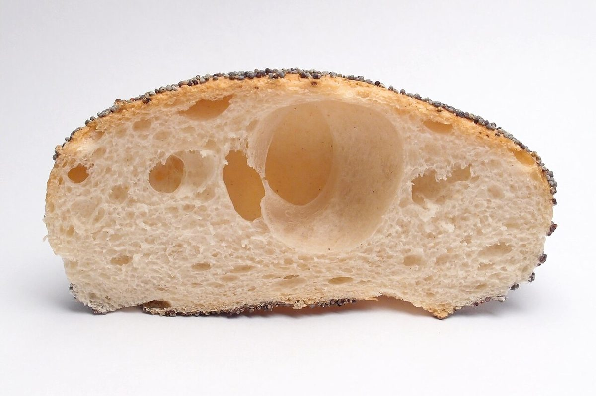

制作側の連想
NoRa は「大・小・大・小」
屋号の「NoRa」は、大文字・小文字・大文字・小文字の4文字が交互に並んでいます。制作側はここから、英語の習字ノートの四線(上の線・中の線・基線)を連想しました。NとRは上の線まで、oとaは中の線までの背丈です。このサイトは、その四線の上に写真を立たせる作りにしています。制作側の連想で、お店の理念・由来とは無関係です。
基線の上に
背丈のそろわない四枚(イメージ)
同じ基線の上に並べると、背の高いものと低いものが交互になります。写真は国外・撮影地不明のフリー素材で、お店のものではありません。
N
白い背景に置かれたクロワッサン(イメージ)
o
白い背景に山のように盛られたコーヒー豆(イメージ)
R
白い背景の丸いカンパーニュ(イメージ)
a白い背景で半分に切ったケシの実つきのパンの断面(イメージ)

ご案内
お店のこと(確認できたものだけ)
| 所在地 | 〒669-1415 兵庫県三田市上槻瀬109 |
|---|---|
| 電話 | 079-506-7860 |
| 営業時間 | 準備中 |
| 定休日 | 準備中 |
| ご予約 | 準備中 |
| 駐車場 | 準備中 |
| SNS | Instagram @cafenora2015 |